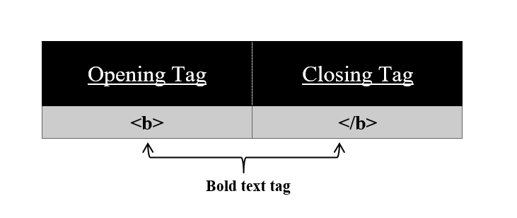

We already know to make our documents look prettier we use some styles, fonts, bold, italics, or underlining. If you use any word processor, these features are inbuilt into that. Similarly in HTML, we have HTML formatting tags. These formatting tags are used to make our HTML document look prettier.
To make text bold use <b> tag on your HTML page.
Syntax:
<b>
//content
</b>
Using this <b> tag we make our text bold. All the content in between this tag appears to be bold. <b> tag has also its corresponding </b> tag.